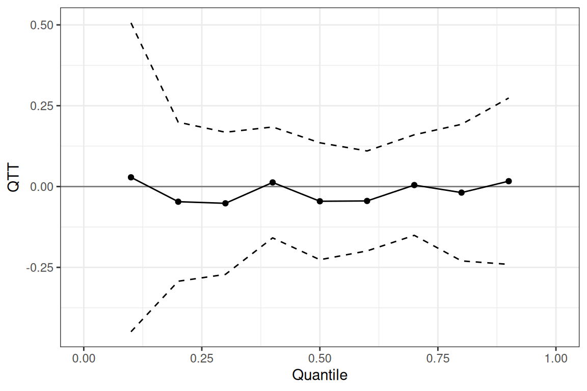
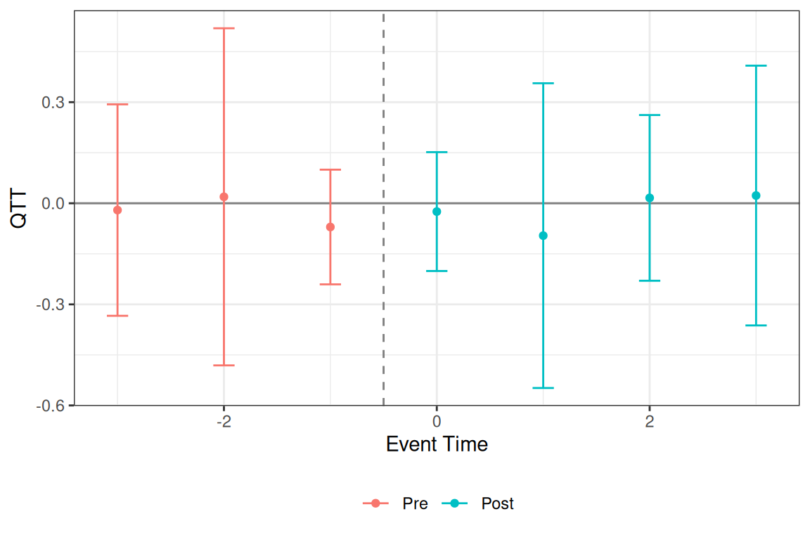
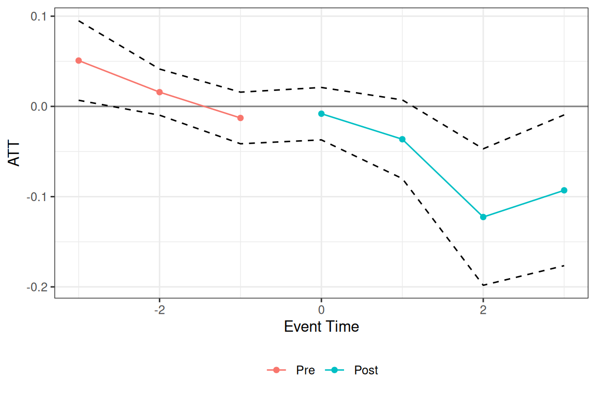

Staggered Treatment Adoption with the qte Package
2026-05-25
Source:vignettes/staggered-adoption.qmd
Introduction
In many empirical settings, units adopt treatment at different points in time — a structure called staggered treatment adoption. For example, states may adopt a policy in different years, or firms may receive an intervention at different times during a study period.
All estimators in qte support staggered adoption via the same interface: specify the outcome (yname), the first-treatment-period cohort variable (gname, with 0 for never-treated units), calendar time (tname), and a unit identifier (idname). The package follows the approach of Callaway and Sant’Anna (2021), computing group-time effects for every cohort and period , then aggregating these into overall, group-specific, and event-study (dynamic) summaries.
The primary output of interest is the QTT curve — the full distribution of treatment effects across quantile levels . Each estimator can also be run with gt_type = "att" to recover the scalar ATT.
This vignette demonstrates the full applied workflow using the mpdta dataset. For conceptual background on the identification assumptions behind each estimator, see vignette("panel-estimators").
mpdta is a balanced panel of 500 US counties observed annually from 2003 to 2007. The outcome is lemp (log county-level employment). Counties are grouped by first.treat, the year they first adopted a minimum wage increase (2004, 2006, or 2007); counties with first.treat == 0 never adopt.
table(mpdta$first.treat)
#>
#> 0 2004 2006 2007
#> 1545 100 200 655QTT curve estimation
We begin with cic() using gt_type = "qtt" to estimate the full QTT curve. CDFs are mixed across group-time cells first (using overall-ATT weights), then inverted at the requested probs grid — this avoids the bias that would arise from averaging scalar quantiles across cells.
Overall QTT curve
summary() prints the overall QTT curve and confidence bands.
summary(res_qtt)
#>
#> Overall QTT Curve:
#> Quantile QTT Std. Error 95% CB Lower 95% CB Upper
#> 0.1 0.0286 0.1321 -0.4807 0.5378
#> 0.2 -0.0469 0.0826 -0.3652 0.2714
#> 0.3 -0.0518 0.0551 -0.2642 0.1605
#> 0.4 0.0127 0.0505 -0.1817 0.2072
#> 0.5 -0.0455 0.0504 -0.2395 0.1486
#> 0.6 -0.0445 0.0452 -0.2186 0.1295
#> 0.7 0.0046 0.0492 -0.1851 0.1943
#> 0.8 -0.0187 0.0528 -0.2222 0.1847
#> 0.9 0.0166 0.0922 -0.3386 0.3718autoplot() plots the overall curve with uniform confidence bands:
autoplot(res_qtt)
Dynamic QTT — event-study by quantile
autoplot() with type = "dynamic" plots the QTT at selected quantile(s) across event times. The plot_probs argument selects which quantiles to show.
autoplot(res_qtt, type = "dynamic", plot_probs = 0.5)
Multiple quantiles can be overlaid by passing a vector to plot_probs (values must be in the estimated probs grid):
Pre-treatment estimates near zero support the identifying assumption. The post-treatment pattern shows the estimated QTT in each period after adoption.
ATT and event-study summary
Setting gt_type = "att" recovers the scalar ATT at each group-time cell, which aggregates into an overall ATT and an event-study (dynamic) table. Event times are pre-treatment periods; are post-treatment.
res_att <- cic(
yname = "lemp",
gname = "first.treat",
tname = "year",
idname = "countyreal",
data = mpdta,
biters = 50,
gt_type = "att"
)
summary(res_att)
#>
#> Overall ATT:
#> ATT Std. Error [ 95% Conf. Int.]
#> -0.0197 0.0159 -0.0566 0.0173
#>
#>
#> Dynamic Effects:
#> Event Time Estimate Std. Error [95% Simult. Conf. Band]
#> -3 0.0508 0.0225 0.0068 0.0949 *
#> -2 0.0158 0.0130 -0.0097 0.0414
#> -1 -0.0128 0.0146 -0.0414 0.0158
#> 0 -0.0081 0.0148 -0.0371 0.0210
#> 1 -0.0364 0.0222 -0.0800 0.0072
#> 2 -0.1226 0.0386 -0.1982 -0.0470 *
#> 3 -0.0930 0.0426 -0.1765 -0.0094 *
#> ---
#> Signif. codes: `*' confidence band does not cover 0
autoplot(res_att, type = "dynamic")
If the QTT curve from res_qtt is roughly flat, treatment shifts the distribution uniformly and the ATT captures the full story. Deviations across quantiles indicate distributional heterogeneity that the ATT misses.
Comparing estimators
All six estimators share the same interface. Here we run each with gt_type = "qtt" and probs = 0.5 to compare median QTT estimates. The estimators are listed in the same order as in vignette("panel-estimators").
res_cic <- cic(
yname = "lemp", gname = "first.treat", tname = "year",
idname = "countyreal", data = mpdta,
gt_type = "qtt", probs = 0.5, biters = 50
)
res_qdid <- qdid(
yname = "lemp", gname = "first.treat", tname = "year",
idname = "countyreal", data = mpdta,
gt_type = "qtt", probs = 0.5, biters = 50
)
res_pqtt <- panel_qtt(
yname = "lemp", gname = "first.treat", tname = "year",
idname = "countyreal", data = mpdta,
gt_type = "qtt", probs = 0.5, biters = 50
)
res_ddid <- ddid(
yname = "lemp", gname = "first.treat", tname = "year",
idname = "countyreal", data = mpdta,
gt_type = "qtt", probs = 0.5, biters = 50
)
res_mdid <- mdid(
yname = "lemp", gname = "first.treat", tname = "year",
idname = "countyreal", data = mpdta,
gt_type = "qtt", probs = 0.5, biters = 50
)
res_lou <- lou_qtt(
yname = "lemp", gname = "first.treat", tname = "year",
idname = "countyreal", data = mpdta,
gt_type = "qtt", probs = 0.5, biters = 50
)
median_qtt <- function(res, label) {
row <- res$overall[res$overall$probs == 0.5, ]
data.frame(estimator = label, qtt = round(row$qtt, 4), se = round(row$se, 4))
}
do.call(rbind, list(
median_qtt(res_cic, "cic()"),
median_qtt(res_qdid, "qdid()"),
median_qtt(res_pqtt, "panel_qtt()"),
median_qtt(res_ddid, "ddid()"),
median_qtt(res_mdid, "mdid()"),
median_qtt(res_lou, "lou_qtt()")
))
#> estimator qtt se
#> 1 cic() -0.0455 0.0439
#> 2 qdid() -0.0614 0.0512
#> 3 panel_qtt() -0.0965 0.0578
#> 4 ddid() -0.0614 0.0528
#> 5 mdid() -0.0384 0.0427
#> 6 lou_qtt() -0.0102 0.1159Estimates will generally differ because each estimator relies on a different identifying assumption. Similarity across methods strengthens confidence in the findings; divergence warrants investigation of which assumption is more plausible for the application.
Repeated cross sections
If the data are repeated cross sections rather than a panel, set panel = FALSE and omit idname. cic(), qdid(), and mdid() support repeated cross sections; ddid(), panel_qtt(), and lou_qtt() require panel data.
res_rcs <- cic(
yname = "lemp",
gname = "first.treat",
tname = "year",
data = mpdta, # no idname
panel = FALSE,
biters = 50
)Inference notes
Standard errors are computed via the empirical bootstrap, resampling units (panel) or observations (repeated cross sections) with replacement. The biters argument controls the number of iterations (default 100). Parallel computation is available via the cl argument (cl = 4 uses 4 cores).
The cband = TRUE default in summary() and autoplot() produces uniform confidence bands (simultaneous coverage over all quantiles or event times). Set cband = FALSE for pointwise intervals.